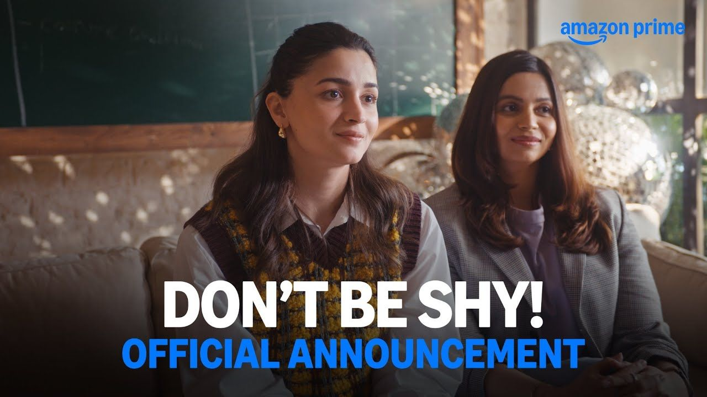

Alia Bhatt को लेकर Google पर अचानक search activity काफी तेज हो गई है। पिछले 24 घंटे के Google Trends data में Alia Bhatt से जुड़ी कई queries Breakout category में पहुंच गई हैं। “Alia Bhatt all movies”, “Alia Bhatt latest movie”, “Alia Bhatt production house” और “Don’t Be Shy Alia Bhatt” जैसी searches इस समय लोगों की खास दिलचस्पी का हिस्सा बनी हुई हैं।
लेकिन सवाल ये है कि आखिर Alia Bhatt को लेकर अचानक इतनी searches क्यों बढ़ रही हैं?
इसकी सबसे बड़ी वजहों में उनकी upcoming production “Don’t Be Shy” को लेकर बढ़ता buzz शामिल है। फिल्म 25 सितंबर 2026 को Prime Video पर रिलीज होने वाली है। इसे Alia Bhatt और उनकी बहन Shaheen Bhatt ने Eternal Sunshine Productions के तहत produce किया है।
“Don’t Be Shy” में Alia Bhatt lead actress के तौर पर नजर नहीं आएंगी। वह इस project की producer हैं। Prime Video की जानकारी के मुताबिक फिल्म में Aarushi Bajaj, Ansh Duggal, Bianca Arora और Piyush Khati मुख्य भूमिकाओं में हैं। फिल्म में Kunaal Roy Kapur, Anurag Basu, Neha Dhupia और Anju Alva Naik भी नजर आएंगे। इसका लेखन और निर्देशन Sreeti Mukerji ने किया है।
फिल्म की कहानी Shyamili यानी Shy के इर्द-गिर्द घूमती है। वह अपनी जिंदगी को लेकर काफी confident है, लेकिन boyfriend के अचानक उसे छोड़ने के बाद उसकी पूरी दुनिया बदल जाती है। इसके बाद कहानी friendship, heartbreak और growing-up की तरफ बढ़ती है।
25 सितंबर को “Don’t Be Shy” Prime Video पर premiere होने वाली है। फिल्म को young love, friendship, heartbreak और growing-up की कहानी के तौर पर पेश किया गया है। यही वजह है कि Google पर “Don’t Be Shy Alia Bhatt” जैसी search तेजी से बढ़ती दिखाई दे रही है।
Google Trends में “Alia Bhatt production house” भी Breakout query है। Alia Bhatt और Shaheen Bhatt का production banner Eternal Sunshine Productions है। “Don’t Be Shy” इसी banner के तहत आने वाला project है।
Alia Bhatt अब सिर्फ actress के तौर पर ही नहीं, बल्कि producer के तौर पर भी लगातार projects से जुड़ रही हैं। इससे पहले “Darlings”, “Jigra” और “Poacher” जैसे projects में भी उनका production side सामने आया है।
अगर बात Alia Bhatt की latest acting movie की करें, तो “Alpha” उनकी 2026 की latest theatrical release है। Yash Raj Films के मुताबिक फिल्म 3 जुलाई 2026 को worldwide cinemas में रिलीज हुई थी।
“Alpha” में Alia Bhatt के साथ Sharvari, Bobby Deol और Anil Kapoor नजर आए हैं। फिल्म Shiv Rawail के निर्देशन में बनी है और YRF Spy Universe का हिस्सा है। इसमें Alia एक young assassin के किरदार में दिखाई देती हैं।

इसलिए “Alia Bhatt latest movie” search करने वाले दर्शकों के लिए “Alpha” और “Don’t Be Shy” को अलग-अलग समझना जरूरी है। Alpha में Alia actress हैं, जबकि Don’t Be Shy में वह producer के तौर पर जुड़ी हैं।
Google Trends में “Alia Bhatt all movies” का Breakout होना भी काफी interesting है। Alia ने 2012 में “Student of the Year” से अपना Bollywood debut किया था। इसके बाद “Highway”, “2 States”, “Udta Punjab”, “Dear Zindagi”, “Raazi”, “Gully Boy”, “Gangubai Kathiawadi”, “Brahmastra”, “Rocky Aur Rani Kii Prem Kahaani” और “Jigra” जैसी फिल्मों में उन्होंने काम किया।
अब “Alpha” की release और “Don’t Be Shy” की production चर्चा के बीच दर्शक उनकी पूरी filmography को दोबारा search कर रहे हैं।
Google Trends की rising queries में “Alia Bhatt is muslim?” और “Alia Bhatt religion” जैसे सवाल भी दिखाई दे रहे हैं। लेकिन सिर्फ किसी query के Google Trends में तेजी से बढ़ने का मतलब यह नहीं है कि उससे जुड़ी कोई नई confirmed खबर सामने आई है। इसलिए इन searches को किसी नई announcement या confirmed development के तौर पर देखना सही नहीं होगा।
इसी तरह “Alia Bhatt birthday”, “Alia Bhatt wedding look” और “Alia Bhatt mother” जैसे searches भी उनकी personal life को लेकर audience की curiosity दिखाते हैं।
Alia Bhatt से जुड़ी rising queries की list में Deepika Padukone, Shilpa Shetty, Ananya Panday और Saif Ali Khan जैसे नाम भी दिखाई दे रहे हैं। हालांकि इसका सीधा मतलब यह नहीं है कि इन सभी celebrities से जुड़ी कोई एक नई खबर Alia Bhatt के trend की वजह है। Google Trends की related queries अलग-अलग user searches और overlapping interests को भी दिखा सकती हैं।
फिलहाल Alia Bhatt के trend का सबसे स्पष्ट entertainment connection “Don’t Be Shy” है, क्योंकि फिल्म की Prime Video release अब बेहद करीब है।
कुल मिलाकर, Alia Bhatt का नाम एक साथ कई वजहों से Google पर ट्रेंड कर रहा है। उनकी latest acting release “Alpha” है, वहीं “Don’t Be Shy” में वह producer के तौर पर जुड़ी हैं।
25 सितंबर को “Don’t Be Shy” के Prime Video premiere के साथ Alia Bhatt का production side एक बार फिर spotlight में आने वाला है। वहीं Google Trends की searches यह दिखा रही हैं कि audience उनकी फिल्मों के साथ-साथ उनके production career और personal-life related topics में भी काफी interest ले रही है।